The 50 Best Albums of 2024
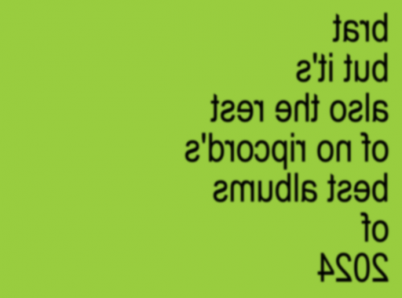
This is it! It's time to reveal our top albums of 2024. A longstanding tradition since 2002, our full list consists of 50 albums selected by the entire No Ripcord staff.
. . .
50. E L U C I D
Revelator
(Fat Possum)
You may know E L U C I D as one half of acclaimed hip hop duo Armand Hammer, who released one of last year’s best hip hop records, We Buy Diabetic Test Strips. ELUCID’s dense, uncompromising Revelator extends the duo’s winning streak.
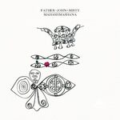 49. Father John Misty
Mahashmashana
(Sub Pop)
Perhaps one of the year's most unexpected comebacks, Father John Misty hasn't lost his flair for the cinematic on his latest. After 2022's big-band swing, Chloe and the Next 20th Century, he returns to his bread and butter—70's-inspired singer-songwriter pop rock—searching for answers with his usual sardonic wit.
48. Yasmin Williams
Acadia
(Nonesuch)
Acadia is a broader, more ambitious collection than 2021’s Urban Driftwood, with Williams skilfully bouncing off various collaborators to explore the boundaries of her significant talent.
47. Les Amazones d’Afrique
Musow Danse
(Real World Records)
The African collective’s third album fuses so many styles — soul, disco, gospel, electro-pop, hip hop, folk — that it can be disorientating at times. The common denominators here are unbridled joy and a strong theme of female empowerment, which is basically the collective’s central purpose.
46. Arab Strap
I'm Totally Fine With It Don't Give a F**k Anymore
(Rock Action)
Decking their distinctive brand of post-rock with eclectic arrangements, the Scottish miserabilists make another strong case for anyone disputing that it's hard to care for Arab Strap without Moffat's acerbic narratives. But, of course, those remain as richly complicated as ever.
 45. Christopher Owens
45. Christopher Owens
I Wanna Run Barefoot Through Your Hair
(True Panther Records)
On his first release since 2017, the mercurial Girls frontman has finally captured the magic of his much-loved former band. Marking the beginning of a more stable period, both professionally and personally, Owens committs all his pain, grief, faith, and hope to record — and the results are nothing short of spectacular.
44.Schoolboy Q
Blue Lips
(Interscope/Top Dawg)
The LA rapper’s sixth album might not have achieved the commercial success of his mid-2010s work, but it’s arguably his most consistent release. The Freddie Gibbs collaboration oHio is an obvious standout, but you’ll be hard-pushed to find a poor track on BLUE LIPS.
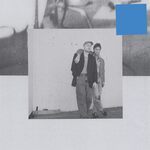 43. Hovvdy
Hovvdy
(Arts & Crafts)
Releasing a mid-career eponymous album is always an interesting move. Has a band exhausted their playbook or have they truly perfected their sound? It doesn't take long to realise which category Hovvdy falls into. This is an impeccable indie pop record.
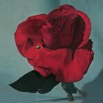 42. METZ
Up On Gravity Hill
(Sub Pop)
The turbulent energy of the feral and fevered METZ was captured to groove for the band’s fifth release, Up On Gravity Hill, which tragically preceded the band’s eventual decision to go on “indefinite hiatus” a la Fugazi. Reverb-drenched, immersive, and melodic, their presumptive final LP is a worthy finish.
41. Shabaka
Perceive Its Beauty, Acknowledge Its Grace
(Impulse! Records)
For his solo debut, the former Sons of Kemet saxophonist abandons his trademark instrument and finds a more introspective and patient sound, inviting comparisons to collaborator André 3000.
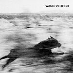 40. Wand
Vertigo
(Drag City)
Six albums in, the LA psychedelic rockers remain as versatile as ever, conjuring airy, weightless art-rock cut from a series of studio improvisations.
39. Chelsea Wolfe
She Reaches Out To She Reaches Out To She
(Loma Vista)
God help the middle school girls listening to this right now, because they don’t know what they’re in for. The rest of us will pick up on PJ Harvey, Bjork, Nine Inch Nails, and maybe Massive Attack.
38. Johnny Blue Skies
Passage Du Desir
(High Top Mountain Records)
He may have changed his name, but Sturgill Simpson's reliable brand of outlaw country as Johnny Blue Skies is unmistakably his.
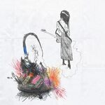 37. julie
my anti-aircraft friend
(Atlantic)
There’s a lot of activity in the shoegaze genre right now, but My Anti-Aircraft Friend captures an evolving act with the potential to truly break out of the pack next time around.
36. Blood Incantation
Absolute Elsewhere
(Century Media Recordings Ltd.)
Absolute Elsewhere is a sprawling epic in the only way the Denver-based death metal band can—proggy suites composed of complex time signatures colliding against spacy, hypnotic analog synths. The virtuosity on display is worth the price of admission, but if you dig deeper, its metaphysical concepts enrich the experience even more.
35. Merce Lemon
Watch Me Drive Them Dogs Wild
(Darling Recordings)
Warm and sweetly melancholic, the Pittsburgh native's Americana-informed third LP delivers a pure, honest distillation of the everyday, packed with lithe and shredding guitar work in equal measure.
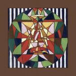 34. Laura Marling
Pattern in Repeat
(Chrysalis/Partisan Records)
Every Laura Marling album feels purposeful. Unembellished as ever, Patterns in Repeat, the London singer-songwriter's eighth release, is no exception -- navigating the emotional landscape of new motherhood through orchestral-accented folk arrangements crafted with grace and beauty.
33. Nadine Shah
Filthy Underneath
(EMI North/Universal)
Channelling the grief and pain she has experienced in recent years, Filthy Underneath is Nadine Shah’s bold, triumphant comeback record. The jarring rhythms provide a perfectly moody backdrop for some of Shah’s career-best vocal performances.
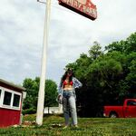32. Waxahatchee
Tigers Blood
(Anti)
Katie Crutchfield's sixth Waxahatchee record is a triumph of country-tinged indie folk, which benefits from MJ Lenderman's contributions.
31. Gouge Away
Deep Sage
(Deathwish Inc.)
Everything about the Florida-based band's latest, Deep Sage, feels familiar, in the best sense, from the pummeling post-hardcore to the forceful melodic hooks.
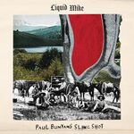30. Liquid Mike
Paul Bunyan's Slingshot
(Liquid Mike)
A glorious nod to underrated 90s American power pop, Paul Bunyan’s Slingshot recalls and eclipses the best work of Everclear, Harvey Danger, and a thousand other bands you last heard when you rewatched American Pie and realised how creepy and weird the 90s were.
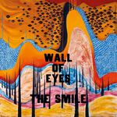 29. The Smile
Wall of Eyes
(XL Recordings)
The Smile gave us two albums this year, but Wall of Eyes was the best. Bending Hectic is arguably the best thing Thom and Jonny have created since In Rainbows.
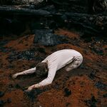 28. Hannah Frances
Keeper of the Shepherd
(Ruination Record Co.)
Keeper of the Shepherd is a truly stunning reflection on grief, its darker tones offset by green shoots of hope. A strong contender for standout folk record of the year.
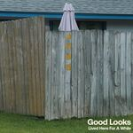 27. Good Looks
Lived Here For a While
(Keeled Scales)
The War on Drugs with better songs? Drive-By Truckers with better guitar solos? There are many purveyors of the type of heartland indie rock Good Looks specialise in, but few sharper songwriters.
26. St. Vincent
All Born Screaming
(Total Pleasure Records)
I’d never begrudge an artist a sojourn into experimental territory, but still…what a relief to see St. Vincent return from her slightly disappointing excursion to the 1970s back to what she does best: losing her goddamn mind. For angular songs that collapse into utter breakdowns of sanity, nobody does it better than Annie Clark....
. . .
25. Nilüfer Yanya
My Method Actor
(Ninja Tune)
How can an album sound bigger and more boisterous but also embrace a beautiful sense of stillness? Just add it to the skillset that makes Nilüfer Yanya one of the most unique and exciting artists working today. On My Method Actor, she’s smoothed out the agitated vibes that filled her excellent last album, Painless, and blown out her sound into louder and softer moments. That expansion makes this release such a great standout. Like I Say (I Runaway) and Method Actor use Yanya’s gift for swerving melodies to keep you guessing until monstrous choruses hit with bold, fuzzed-out guitars. Keep On Dancing glides along with snappy percussion and layered acoustic guitars. Ready for Sun (touch) and Faith’s Late are as serene as a day on the beach but shot through lyrically with self-doubt. It’s in these juxtapositions and endlessly creative arrangements that Yanya has reached a new pinnacle. - Joe Marvilli
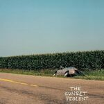 24. Mount Kimbie
The Sunset Violent
(Warp)
Given that Mount Kimbie receives continual praise for their versatility as musicians, it's easy to dismiss the true core of what they're trying to achieve. The Sunset Violent is no different at the surface level—a steady pulse of vibrant post-punk that seems almost antithetical to the genre since it's so easy on the ears. Dig a little deeper, though, and you'll hear a band seeking escapism for emotional comfort. Heavy on hypnotic grooves, the London duo of Dominic Maker and Kai Campos expand their lineup to achieve a fuller sound that balances lyrical straightforwardness with melodic approachability. Past collaborator Arshy Marshall, aka King Krule, returns, bringing his gloomy translucence to tracks like Boxing and Empty and Silent, a perfect pairing bent on the strain of everyday drudgery. But it's on tracks like Dumb Guitar where the band shines, in which they try to pick themselves up over a taut krautrock beat: “Forget it all, just smile now.” - Juan Edgardo Rodríguez
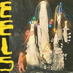 23. Being Dead
EELS
(Bayonet Records)
From the very first chord of this album, I was pulled straight into the Television Personalities' This Angry Silence, and I was hooked right away. It's not the most apt comparison, but it still set the tone. This John Congleton-produced confection is full of the twee sighs and hand claps of decades gone by. But unlike some jangle pop revival acts making waves today, Being Dead have many more layers of depth to mine. Their Beach Boys harmonies overlay strong surf and garage rock influences, but give way to some unexpectedly dark bass lines beneath the surface. The result is at once a record plucked out of another time and fully modern in equal measure. - Gabbie Nirenburg
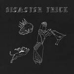 22. Horse Jumper of Love
Disaster Trick
(Run For Cover)
Horse Jumper of Love’s unique brand of slow-core and shoegaze—let’s call it slowgaze—is all about tender songwriting, ponderous, gloopy guitars, and minimalist percussion. Think Phil Elverum covering Slint (Snow Angel, Word) or Murray Street-era Sonic Youth on downers (Today’s Iconoclast). Disaster Trick was my slow burn album of the year, which I brushed aside initially, only to fall hard for it as the dark nights set in. The Boston band’s magical ability to bend time to their will deserves a shoutout, too—Gates of Heaven is genuinely epic, yet, somehow only 2:21 long. How do they even do that? - David Coleman
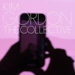 21. Kim Gordon
The Collective
(Matador)
Earlier this year, Bye Bye, the lead single from Kim Gordon’s trap-leaning solo outing The Collective, generated a considerable buzz, her otherwise seminal and noise-addled rep with Sonic Youth and undulating improv with Body/Head contrary to this more current sound. Not one to remain firmly planted in the glory days of yore, reject modern trends, or shun youth culture, The Collective proved a viable course for Gordon to pursue, one that enabled her to effectively identify new sonic (pun intended) territory that she could author to suit her creative persona. The Collective is heavy: Gordon’s predilection for intensity is manifested via palpable drones (I’m A Man), reverberating vocals (Psychedelic Orgasm), and hyper-gloss club beats (Bangin’ on the Freeway). Still cool personified, Gordon’s latest endeavor didn’t disappoint. - Sean Caldwell
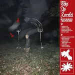 20. This is Lorelei
Box for Buddy, Box for Star
(Double Double Whammy)
It’s hard to call a side project a side project when Nate Amos’ solo work as This Is Lorelei predates his main gig with Rachel Brown in Water From Your Eyes, but it took a decade for him to put out his first widely distributed and most focused work. Starting with a Carter Family influenced faux country duet on Angel’s Eye, Box for Buddy, Box for Star covers a lot of unanticipated ground. Left field singles I’m All Fucked Up and Dancing in the Club, with their breakneck paces, are easy to love. But it’s the six-minute toy piano and organ fueled paean to emotional self-protection, Where’s Your Love Now, that steals the show and begs for listen after listen. - Mark Moody
19. The Umbrellas
Fairweather Friend
(Slumberland)
Indiepop, twee, chamber pop, jangle, whatever you want to call it, The Umbrellas work within a genre that’s narrow in scope and hasn’t changed much in the last four decades or so. That is to say, there’s no hiding place, they can’t mask paucity of ideas through production tricks, and they’re laying it all out there. That’s what makes Fairweather Friend such an exciting achievement; the band’s simple approach to instrumentation and structure gives the songs room to shine, and irresistible melodies zip along on ten tracks that never outstay their welcome. Every year, countless identikit acts try and release albums like this, and they’re nearly always too derivative, ultimately forgettable, or both. The Umbrellas are never going to sell out huge rooms, but deserve plenty of kudos for breathing life into a style that can often sound stale. - Joe Rivers
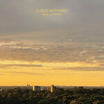 18. Cloud Nothings
Final Summer
(Pure Noise Records)
Is this title a threat, Dylan? The idea of anything being final with Cloud Nothings feels heartbreaking, as Final Summer is one of the band's most assured and charged albums in years—both a shot-in-the-arm for lapsed fans and unequivocal validation for lifers who’ve known the Ohio band to be one of the best for years now. Regardless of the intention, Final Summer certainly sounds like it carries the stakes of finality with it, from the steam, urgent build of its' title track to the rafter-shaking power of I’d Get Along. All of this should come as no surprise from a band responsible for some of the most vital rock music of the 2010’s, but with the band well into it’s second decade, Final Summer offers a stark reminder that few can match their hooks and energy. - Peter Quinton
17. Tyler, The Creator
CHROMAKOPIA
(Columbia Records)
Tyler’s last few albums have been so consistent that it’s now easy to forget that, as the leader of Odd Future, he was once America’s main progenitor of parental moral panic. Building on the melodic and reflective hip-hop that has been his calling card since 2017’s Flower Boy, Chromakopia is arguably Tyler’s most personal album yet—it’s narrated by his mother, features vulnerable reflections about his father, and contains musings about potentially starting a family. His storytelling has been taken up a notch, too: Hey Jane, the recounting of an unexpected pregnancy told from both sides, recalls 2Pac at his most tender and reflective, while Judge Judy might be explicit in tone but the honeyed vocals of Childish Gambino and the final verse twist deliver a real gut-punch. Chromakopia is the work of an artist at the top of his game; maybe even one at the top of the game, period. - Joe Rivers
16. Fat Dog
WOOF.
(Domino)
When I saw this band play in Barcelona, I'd only heard of them in passing and had no idea what to expect. What I got was cocky, untethered post-punk showmanship that blew me away. I’ve always had a predilection for music that made me feel a little bit unhinged. Here, a short but frantic ride through inanity and insanity, dipped deeply into both klezmer and industrial, does the trick. I’ve described them as an unholy combination of Gogol Bordello, Radiohead, and the Crystal Method. That will either turn you fully on or fully off; there’s no inbetween. - Gabbie Nirenburg
 15. Vampire Weekend
15. Vampire Weekend
Only God Was Above Us
(Columbia Records)
We haven’t heard from these collegiate miracle workers in years, so it only makes sense they’d begin by clearing their throat. “Fuck around and find out,” sings Ezra Koenig on opener Ice Cream Piano, the song where Koenig and co. decisively define Only God Was Above Us as the first Vampire Weekend album to act as a dazzling recap of their previous chapters. Look for the spiked guitar textures of Contra on Gen-X Cops, the choirs of the Mary Boone which suggest a similar holiness to Ya Hey, or the reprise during Connect of the drums from Mansard Roof. Nothing stays the same, though, especially now that Koenig is 40. You’re going to want to come back to the eight minute venture of Hope, a richly-seasoned folk song that centers around this defeated mantra: “The enemy’s invincible, I hope you let it go.” - Ethan Beck
14. Heems & Lapgan
LAFANDAR
(Veena Sounds/Mass Appeal)
Heems really came back with a bang this year. LAFANDAR, the former Das Racist MC’s first album in six years, was followed six months later by VEENA. They were both pretty spectacular, but the Lapgan collaboration LAFANDAR evidently made the biggest mark on the No Ripcord team. A backdrop of South Asian samples and crisp beats allows Heems free reign to demonstrate his considerable talents as an MC and as a uniquely humourous lyricist, referencing goat biryani one minute and Arsenal’s talismanic right winger Bukayo Saka the next. LAFANDAR is an absolute triumph, dispelling any doubt about Heems’s credentials once and for all. - David Coleman
13. Cassandra Jenkins
My Light, My Destroyer
(Dead Oceans)
On Cassandra Jenkins’ third album, the details stick before the melodies do. There’s Doris, who “loved her American cars,” but had her keys taken away when she got too old. Elsewhere, Jenkins occupies sterile hotel rooms and ponders the economic injustice of those funding space colonization. The mundane has always appeared otherworldly in Jenkins’ muted indie rock, but few albums from this year could place early 2010s synth-pop of Delphinium Blue next to the Wilco-recalling “Clams Casino,” a contender for the year’s funniest, saddest song. Let’s pick up where we left off earlier: After Doris gets her car keys taken, all she can say is “Hey, hey, hey/Why’d you have to go and do me like that?,” no doubt from listening to Tom Petty all those years. By that point, you know Doris. - Ethan Beck
12. Adrienne Lenker
Bright Future
(4AD)
Bright Future may have been more appropriately titled Adrianne Lenker and Friends. No doubt an unparalleled songwriter on her own and with Big Thief, here the songs shine best when she is aided by her companions’ sympathetic assists. Phillip Weinrobe’s front and center banjo on Already Lost takes the song to a higher plane. Lenker’s and Mat Davidson’s tangled acoustic guitars and vocals on Free Treasure are a thing of beauty. Meanwhile, the shaded vocals from Davidson, Nick Hakim, and Josefin Runsteen (not to mention Runsteen’s violin) on Sadness as a Gift make the song an easy album highlight. Lenker also quietly pulls off the lyrical line of the year on the same song: “Snow falling, I try to keep from calling,” getting right to the heart of the matter. - Mark Moody
11. Ducks Ltd
Harm's Way
(Carpark)
A great narrative can do wonders for raising an album’s prestige, but the older I get, the more refreshing I find it when a band is recognized for just being so freakin’ good at what they do. Canada’s Ducks Ltd. fit this bill perfectly, and have done so from the start. But while their third album’s title hints at an ominous heel turn, the duo display growth through refinement and expansion of a flawless representation of guitar-soaked jangle pop. Harm’s Way may be consistent, but it’s anything from one-note—songs swing from meandering cooly with clean chiming guitars to jolting forward with fuzz-induced electricity. At every turn though, Harm’s Way exemplifies craft and hooks above all else, with its' only trick being making it seem effortless. - Peter Quinton
10. Magdalena Bay
Imaginal Disk
(Mom + Pop)
Existing on the far reaches of the pop spectrum, Magdalena Bay undergoes their full metamorphosis on Imaginal Disk. The LA-by-way-of Miami-duo delivers an azure-tinted, almost hour-long odyssey far more idiosyncratic than their career might initially have suggested. From the '80s-evoking driving rhythm of Image to the spacey lounge-pop of Killing Time, singer Mica Tenenbaum's voice, in her oddly affecting high pitch, playfully saunters over shimmering hooks that linger for days. Unsparing in their genre-bending approach, most of the album feels new yet delightfully old-fashioned. Take the ABBA-esque Cry for Me, which, with its piano-driven grandeur, sounds like an unearthed theatrical AOR anthem. Seldom do far-reaching albums like Imaginal Disk achieve such cohesion, but when they're this thoughtfully considered, you can't help but feel thankful they had the guts to aim so high. - Juan Edgardo Rodríguez
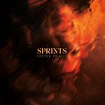 9. Sprints
Letter to Self
(City Slang)
It starts with drums, a pummeling, tense beat soon joined by a taut, scratchy guitar—the countdown before all hell breaks loose. When it does, it’s a glorious, furious punk mix electrifying enough to power a small city. That’s the story of Ticking, the first song from Sprints’ superb debut, Letter to Self, and it’s a model for how this Irish four-piece has exploded out of the gate this year. This band has a take-no-prisoners approach. Whether ripping down the misogyny she’s experienced or exalting her feelings of queer love, singer Karla Chubb’s powerhouse vocals take you on a thrilling journey, one that the music vibrantly supports. Most importantly, Sprints’ songs are communal, inviting you to sing and dance and rage against the injustices in the world and in your life. When things spiral out of control and you want to scream in a cathartic release, Sprints provides the soundtrack. - Joe Marvilli
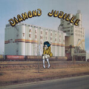 8. Cindy Lee
Diamond Jubilee
(Realistik Studios)
In many ways, Diamond Jubilee reclaimed something lost in the last decade's tireless search for elevated poptimism. Through no fault of their own, Patrick Flegel's incredible achievement became something of an “indie rock savior,” recalling a time when an album without a compelling narrative could come out of nowhere and captivate listeners and, let's be honest, music writers alike. We've since learned that both can coexist, but, with rock music losing its potency in the current zeitgeist, it's only apt that Flegel's generous two-hour opus went back to a time when the genre was finding its identity. Much has been said about the music itself—it's aughts-resembling post-rockabilly, it's pre-glam dissonance, it's CD-era pop psychedelia. And, truly, so much more. Ultimately, it took a toll on Flegel, who abruptly ended their celebrated tour for personal reasons. We'll never know if this iteration of Flegel as Cindy Lee will ever come back, but if they never do, they've left us a fleeting moment in time so genuine that it hurts. - Juan Edgardo Rodríguez
7. Jessica Pratt
Here in the Pitch
(Mexican Summer)
While everyone was losing their minds over the brat summer phenomenon, Jessica Pratt quietly released her fourth album Here in the Pitch, confirming herself as an artist for all seasons. Zeitgeist be damned, Pratt’s delicate compositions are backed by sparse, barely there orchestration, which at times resembles a ghostly, minimalist reimagining of Pet Sounds. If you had pigeonholed Pratt as a folk musician, the stunning baroque pop of opener Life Is will force you to think again. This is a record of evolution and reinvention, the sound of a singular talent operating at her artistic peak. And it even has the audacity to save its best for last, with The Last Year comfortably secure as my song of the year. - David Coleman
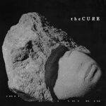 6. The Cure
Songs of a Lost World
(Polydor Records)
“This is the end of every song we sing… alone.” Could this comeback be their swan song? The Cure broke their 16-year absence with Songs Of A Lost World, an emotional 8-song masterwork that had been in development for a number of years. Containing songs that had been road tested for 2023’s highly successful Shows of the Lost World tour, Songs Of A Lost World reveals a remarkable timelessness owed not just to the band’s continued capacity for melody and arrangement, but Robert Smith’s unchanged voice, age somehow aurally elusive for The Cure. Preceded by the two smartly plucked singles Alone and A Fragile Thing, both tracks offering a well-informing glimpse into the album’s shift in mood, Songs Of A Lost World’s propagation of meditative space via patient and lengthy intros (the aforementioned Alone, And Nothing Is Forever, Warsong) sounds purposeful, commanding immersion into this excellent return to form. - Sean Caldwell
5. The Last Dinner Party
Prelude to Ecstasy
(Universal Music)
The Last Dinner Party were this year’s main recipients of the “industry plant” accusations and, while the naysayers can never quite be silenced, the London quintet certainly showed they belonged on Prelude to Ecstasy. An ambitious, baroque-pop confection that brims with ideas and shows the kind of songwriting nous you’d more normally associate with bands ten albums in, Prelude to Ecstasy brings you into its world before sucker-punching you with unexpected, hairpin turns. The breadth of scope and instrumentation recall the Britpop excess years, but thematically, it’s melodrama, relationships, Catholic schools, and a little bit of sexual intrigue thrown in for good measure. Vocalist Abigail Morris is a born frontwoman with ineffable star power, and Prelude to Ecstasy shows the band have more than enough ideas and acumen to ensure they’re in this for the long haul. - Joe Rivers
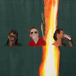 4. MJ Lenderman
Manning Fireworks
(Anti)
Beyond the himbo dome, past the “quiet hiss of a midnight piss,” and right around where Rudolph accidentally killed a doe, the sharp-shooting crux of MJ Lenderman’s Manning Fireworks sits. The attention thrust upon this 25 year old rocker, quick with evocative phrases about tangled masculinity, might seem a little bizarre from a God’s eye view. Look more carefully at what Robert Christgau describes as “trad-rock’s relaxed charms” from these North Carolinians and you’ll find hook after classic rock hook. Start with the whirling guitar solo and empathetic chorus of She’s Leaving You, which elevates divorce crisis clichés into something electric. Stick around for the twofer of On My Knees, which has the most satisfying chord progression of the year, and the Warren Zevon-referencing Bark at the Moon, which throws in six minutes of closing guitar feedback. It’s rare an album earmarks time for self-reflection, but Manning Fireworks earns every minute. - Ethan Beck
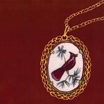 3. Friko
Where we've been, Where we go from here
(ATO Records)
With a febrile energy that translates to noisy peaks and nerve rattled interludes, Friko’s debut album arrives fully formed—frayed edges and all. Somehow, the bashed out shout-along Chemical rests easily between two of the album’s most delicate moments on For Ella and the forward looking nostalgia of Statues. On the latter, the duo of Niko Kapetan and Bailey Minzenberger lament: “Someday, we’ll lay statues of our own, For now, we’ll bow to memories made of stone.” Their hope for legendary status could be cemented by the album’s three song opening salvo, but all of Where we’ve been, Where we go from here is worthy of time honored praise. - Mark Moody
2. Charli xcx
BRAT
(Atlantic)
In all my years writing for No Ripcord, no album I’ve covered has carried with it the burden of cultural capital as BRAT has—for better or worse. The memes ran rampant not long after its chartreuse, low-poly cover hit the internet, creating a fervor so rampant its' own mastermind had to kill it. The exhaustion felt from Brat summers, Brat aesthetics, and even Brat politicians can make even a masterwork lose some luster, but make no mistake, we have a real masterwork on our hands. Memes rarely result from a work being just that good, but in the case of BRAT, it’s perfection of hyperpop sensibilities and ability to weave intimacy with abandon so acutely may have have been enough for Charli xcx to make her vision and talents undeniable, even to those who have taken her for granted all these years. - Peter Quinton
1. Mannequin Pussy
I Got Heaven
(Epitaph)
The first time you hear this record, you may come away with the impression that it's disjointed or erratic. How do hardcore songs make sense nestled in so closely to soft, meandering numbers? You'll soon figure out your mistake. This is punk rock with a full range of human emotions—a full range of a woman’s emotions. It’s desire and rage laid bare, and those are not things that demand consistency of tone. A deep nod to Courtney Love and some ‘90s alt-rock mainstays, both light and dark (I hear the Cardigans on the softer tracks), this might be the record that will convince you that punk rock can be a thing of painful beauty, vulnerability, and resonance. - Gabbie Nirenburg
...
So there you have it: our top albums of 2024. We'd love all of you to chime in and tell us what were your favorite albums of this year by reaching out to us via our official Twitter (@noripcord) and Facebook accounts. We hope you enjoyed the list and our coverage of the year; wishing you all the best for the holidays and see you again in 2025.
Note: Contributions for blurbs 50-26 by David Coleman, Gabbie Nirenburg, Sean Caldwell, Joe Rivers, and Juan Edgardo Rodríguez.